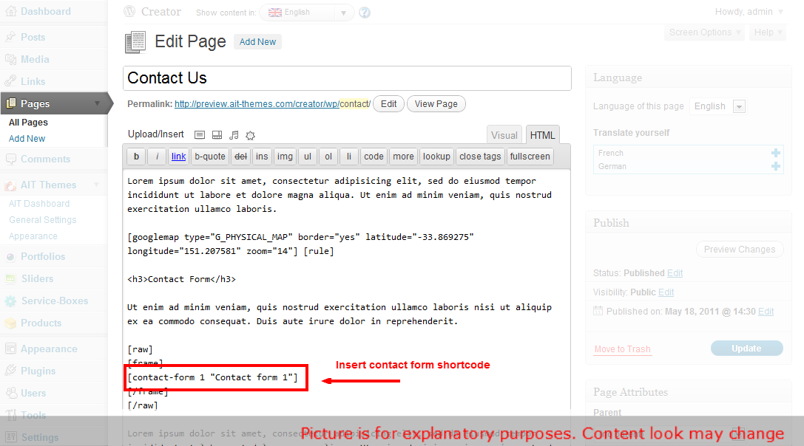

Online Documentation - The up to date documentation
Table of contents:
- 1. Hosting Requirements
- 2. Rounder Theme Installation Instructions
- 3. Creating Custom Menus
- 4. Work with Global and Local settings
- 5. Rounder Homepage
- 6. How to Use Service Boxes
- 7. How to Import and Use Revolution Slider
- 8. How to Use Presentations
- 9. Translating theme to other languages
- 10. Setting Up Contact Form
- 11. Advanced users: Editing HTML files
1. Hosting Requirements
We always test our themes on most standard hosting set ups, however make sure your hosting match the following requirements:
- PHP5 version
- PHP5 GD library installed
- Notices & Warnings are turned off
- We also recommend mod_rewrite enabled
- Memory limit set up at least 64MB
- upload_max_filesize at least 10MB
- Please also check that you have permissions to write to theme folder
2. Rounder Theme Installation Instructions
Theme Installation
Theme should be installed standard way via wordpress admin panel.
- Please navigate to "Appearance -> Themes -> Install Themes"
- Click on Upload
- Select your theme from WP folder that is included in the Zip file you purchased.
- Click Install Now
- After the theme is successfully installed, click Activate
[notification type="attention"]Please, do not change the name of theme folder and prefix of Wordpress database tables (default prefix is "wp_").[/notification]
Importing Default Content
For faster site development we recommend you to import default content. Default content shows you all page layouts, shortcodes, post types and revolution slider.
{kind=link}
First step before import is to UNCHECK (3) "Organize my uploads into .. " in Settings (1) / Media (2).
Then go to Tools -> Import -> WordPress -> Upload file and import. Please select a file called defaultcontent-export.xml and and simply click Upload file and import. We recommend you installing Contact Form 7? plugin before running import. Itll import you also contact form examples.
NOTE: for importing content use this plugin WordPress Importer.
Setting Up Homepage and Blog
Please note that you have to select a homepage and posts page for our theme to work properly.
1. If you havent uploaded our default content, please create a new page. You can of also edit the existing homepage we provided in default content.
2. In pages (4) choose "Homepage Presentation" (5) it's page that should become your homepage and Select Default Template" (6).

3. Navigate to: Admin -> Settings -> Reading (7) and set a static page (8) and Front page (9) & Posts page (10):
{kind=link}
3. Creating Custom Menus
1. Navigate to: Appearance Menus
2. Now you can choose any items like pages, categories or custom links from the left column them to add to Main menu or Footer menu.
After you have added in your items, you can use drag and drop to order individual items. You can also click each item to reveal additional configuration options.
When you have finished building your custom menu, make sure you click the Save Menu button.
3. Its also important to define which menu will become your Primary menu and which one will be a Footer menu. This can be set in Theme Locations box on the left hand side.
{kind=link}
4. Work with Global and Local settings
In this template you can use two types of settings:
- Global settings
- Local settings
Global settings
Global settings can be found in the General Settings page. All what you have set up in these global settings is set up for all you pages.
If you want to have slider, or for example the same appearance of site header, you don't need to make these changes in all pages which you create.
All this you can set up in the global settings.
Here is an example of settings, when you want to have slider on all your pages:
Using this global settings may save your time, when you want to have slider in all, or in most of your pages. You need just to set this global settings, and if you want to turn off slider for the specific page, you can do it in the Local setting of specific page.
{kind=link}
Local settings
Local settings are settings which you may see under visual editor while you creating or editing you page.
With these settings you can set up specific settings for the specific page.
If you want to have set up slider for example only in your homepage, you can set up this slider in the Local settings of your homepage like is demonstrate in this image:
{kind=link}
5. Rounder Homepage
The Homepage of the Rounder Wordpress theme contains following sections:
The layout of the homepage is shown in the picture below
{kind=link}
Slider
This theme lets you use powerfull Revolution Slider.
Also there is alternative Anything slider with descriptions.
- Put there any pictures you want and make them different from another
- Give picture a descriptions and links
Each tab of slider is set up in the General settings > Header. The sliders can be set up locally in each page.
Service Boxes
Service boxes section in this theme lets you instert an item with custom image, header name, description and link. There also "CSS3 Features" option in the general settings. When "CSS3 Features" option is turned on, service boxes will do some magic... ;)
Presentations
In Presentations section you can insert presentation items that have image and description. There are tabs for changing showed item. You can also set item transition effect.
6. How to Use Service Boxes
If you want to add service boxes to you website, click on Service-Boxes from WordPress Menu.Creating service boxes is similar to creating standard posts in wordpress. Each service box item can have:
- Image
- Text
- Link
- Custom Width (Leave empty for auto calculation.)
{kind=link}
You can create various service boxes categories and then show only particular service box category on any post or page. You can also set these settings globally that means itll show on every page.
7. How to Import and Use Revolution Slider
Revolution Slider comes with these features:
- Unlimited Slides
- Unlimited Caption Layers
- CSS Animation with a fallBack to jQuery
- Vimeo & YouTube video
- Drag and Drop layering
{kind=link}
{kind=link}
{kind=link}
Then in section Revolution Slider (2) click on add new slider (3).
{kind=link}
There you can set and edit basic settings about slider like slide transitions, slide change speed, shadowing, responsivity, slide navigation etc.
Then go to edit slides (4) where you can set up everything what you would like to add to your slides.
{kind=link}
In the section edit slides (4) choose slide from slides list (5) which you would like to edit (click on edit slide).
{kind=link}
On the top (6) you have some basic settings (transition, slot amount, rotation, delay etc.). In section Slide Image and Layers (7) you can add (delete) new layers (text, image, video) (8) and they starting to sort continually with adding in section Layers Sorting (9). Just drag and reorder (10) them how you wish :)
All layers you can simply drag (11) and drop exactly where you want them on slide picture.
In layer params (12) you can set / edit text, video, pics, animations, position and css file ( (13) as well.
{kind=link}
For more information follow original documentation of Revolution Slider.
8. How to Use Presentations
If you want to add presentations to your website, click on Presentations from WordPress Menu.Creating presentations is similar to creating standard posts in wordpress. Each presentation item can have:
- Title
- Image
- Description
- Link
{kind=link}
You can create various presentations categories and then show only particular presentation category on any post or page. You can also set these settings globally that means itll show on every page.
Also you can set:
- Title
- Image
- Description
- Link (Leave empty for auto calculation.)
You can also set all of these settings globaly in Sections tab of General Settings.
{kind=link}
9. Translating theme to other languages
You can translate your website to any language. Theme is WPML wordpress plugin compatible.
When you have this wordpress plugin then go to Plugins > Add New > Upload, upload and activate your WPML package. In WP-Menu should appear WPML button. Click on it and choose languages and default language. At top of Admin should appear language selector. Then you can simply switch between your languages and set up custom admin values for every language.
{kind=link}
You can translate widgets and widget titles too, but you must use lang shortcode: [lang code=en]Text[/lang]

10. Setting Up Contact Form
For contact form we use a free wodpress plugin called Contact Form 7. More info about this plugin can be found on the following url: http://contactform7.com/
To install this plugin go to Plugins > Add new and type into search bar Contact Form 7. Find the plugin and click to Install Now.
Then click Activate Plugin. A new menu section will be created at the left hand side. Itll be calledContact.
{kind=link}
{kind=link}
{kind=link}
If you want to have the same contact form like we have at our demo site, you can also install Really Simple CAPTCHA plugin. Code that we use on our demo site is as follows. Please insert it into Form box in Contact settings page:
<p>
<label for="your-name">Name <span>*</span></label>[text* your-name]
</p><p>
<label for="your-email">Email <span>*</span></label>[email* your-email]
</p><p>
<label for="your-subject">Subject</label>[text your-subject]
</p><p>
<label for="your-message">Message</label>[textarea your-message]
</p><p>
<label for=" slect-os">Your OS</label>[select slect-os " " "Windows XP" "Windows 7" "Apple" "Linux"]
</p><p>
[checkbox* agreement use_label_element exclusive "I agree with the terms of use of this Contact Form"]
</p><p>
<span>Do you need Support ?</span>[radio radiobuts use_label_element "Yes" "No" "Nobody Knows"]
</p><p>
<span>Do you need Support ?</span>[radio radio-vertical use_label_element "Yes Vertical" "No Vertical" "Nobody Knows Vertical"]
</p><p>
[captchac captcha-1] [captchar captcha-1]
</p><p>[submit "Send Message"]</p>
Once you have your contact form created, you can insert into to any of you pages with a simplecontact-form shortcode:

{kind=link}
{kind=link}
{kind=link}
11. Advanced users: Editing HTML files
If you are an advanced user and would like to edit HTML directly, please be advised that we use a MVC architecture that allowed us to completely separate HTML content from standard WordPress PHP files.
- HTML templates can be found in folder ./Templates
- CSS is in file style.less.css, please note that style.css is generate dynamically and all your changes will be therefore deleted
You can read more about our templating engine WpLatte on the following url.